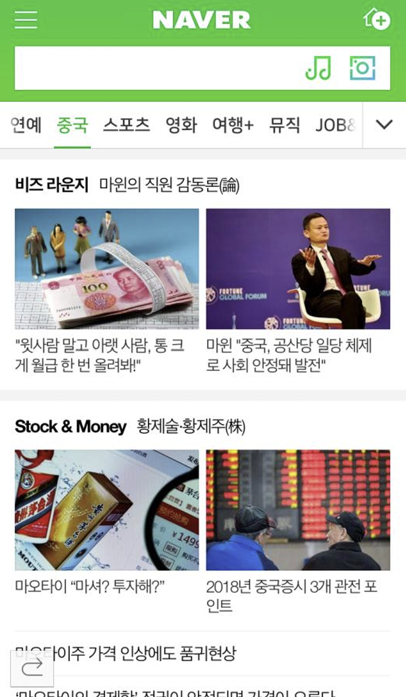

CASE 03
제목 하나로 조회수 3배
네이버 메인 중국 주제판 · 2017 – 2022 · 제목 작성 및 판 편성, 판 분석 리포트 작성 — 기여도 100%

편성 화면 · 네이버 모바일 메인 중국 주제판
이 안에서 눈길을 잡지 못하면 그 콘텐츠는 그것으로 끝입니다.
네이버 메인에 노출되는 판을 매일 셋업하고 이슈에 즉시 대응하는 일이었습니다. 디바이스에 관계없이 잘리지 않는 글자 수, 최대 23자.
매일 이 화면의 코너 구성과 제목을 직접 편성했습니다. 비즈 라운지, Stock & Money 등 코너 단위로 콘텐츠를 배치하고, 각 카드의 제목을 23자 안에서 다시 썼습니다.
SITUATION & TASK
23자라는 극도로 제한된 지면 안에서, 매일 콘텐츠의 첫인상을 직접 만들어야 했습니다.
ACTION
이용자 관점에서 관심·감정·기억 중 하나를 골라 23자에 담고, 실시간 PV로 효과를 검증하며 제목을 반복 수정했습니다.
RESULT
제목 교체만으로 PV가 1,000단위에서 1만 단위로 상승. 콘텐츠 변경 없이 조회수 3배 이상 개선을 달성했습니다.
기여도
제목 작성
100%
편성 운영
95%
지표 분석
90%
TOOL
네이버 CMSPV 분석A/B 테스트
01
조건
제목을 쓸 때마다 스스로에게 같은 질문을 던졌습니다.
"너라면 이걸 누르지 않고는 못 배기겠니?"
"너라면 이걸 누르지 않고는 못 배기겠니?"
이용자의 입장에 서서, 관심·감정·기억 중 무엇을 건드릴지 정하고 그것 하나만 23자에 담았습니다. 결과는 실시간 PV와 클릭 데이터로 즉시 확인됐습니다. 오전 내내 1,000 단위에 머물던 PV가 제목을 고친 뒤 1만 단위로 뛰어올랐습니다. 콘텐츠는 그대로였습니다. 바뀐 건 문장 하나였습니다.
02
실제로 고쳐 쓴 제목들
① 애플 팀 쿡
PV 9,000 → 약 30,000 (3배)
A · 원안
애플CEO 팀 쿡, 그가 중국에 백기를 든 이유는?

B · 발행안 · 채택
中 스타벅스서 커피값 못 내 망신 당한 애플 CEO

WHY B
'백기'라는 추상적 은유를 걷어내고 커피값을 못 낸 구체적 장면으로 전환.
② 아마존 vs 틱톡
A · 원안
美 출판업계서 더 환영 받는 건 아마존 아닌 틱톡?

B · 발행안 · 채택
미국에선 '틱톡'이 아마존보다 책을 더 잘 판다?

WHY B
업계 시점의 서술을 독자가 아는 두 브랜드의 대결로, '환영받는다'는 모호한 술어를 '더 잘 판다'는 검증 가능한 동사로 변경.
③ 하이디라오 신임 CEO
A · 원안
27년 전 평사원에서 시작해 하이디라오 CEO된 여성

B · 발행안 · 채택
월급 120위안 받던 홀서빙 직원, 하이디라오 CEO 됐다

WHY B
'평사원'이라는 요약을 '월급 120위안, 홀서빙'이라는 구체값으로 전환하여 낙차 극대화.
03
성과
18만 → 23만
UB (편성 개선 후)
3년
직접 운영 기간
23자
디바이스 무관 제한선
사드·한한령·코로나19로 반중 정서가 극에 달한 시기에 운영됐음에도, 국내에서 양질의 중국 정보를 제공하는 가장 큰 채널로 자리잡았습니다. 썸네일 크롭(인물 시선 방향, 배경 컬러, 확대 비율)에 따른 도달률 차이까지 데이터로 검증했습니다.
04
판 분석과 방향성 제안
제목을 쓰는 일과 함께, 판 전체를 정기적으로 진단하고 다음 분기의 방향을 제안하는 리포트를 직접 작성했습니다. 월간·분기 단위로 지표를 트래킹하고, 편성 의도와 실제 반응이 맞았는지 확인해 개편안으로 연결했습니다.
지표 트래킹
판 설정자·UB·PV·클릭 수를 일별로 축적해 요일별 패턴과 하락 구간을 특정했습니다. 개편 전후 수치를 비교해 변화의 원인을 편성·이슈·외부 유입으로 나눠 설명했습니다.
편성 의도 검증
요일별 1라인에 배치한 코너와 그날 조회수 상위 콘텐츠를 대조해, 배치 의도가 실제 반응과 일치했는지 매주 확인했습니다. 어긋난 요일은 소재와 무게감을 바꿔 재편성했습니다.
콘텐츠·필진 점검
Best·Worst 콘텐츠와 댓글 반응을 사례로 정리하고, 필진 30여 명과 제휴처 36곳의 호응도를 코너 단위로 평가해 섭외·조정 기준을 만들었습니다.
이용자 조사와 VOC
이용자 479명 설문으로 접근 시간대와 선호 카테고리를 확인하고, 주관식 의견을 30개 키워드로 분류해 수요와 개선점을 콘텐츠 과제로 옮겼습니다.
결론은 항상 다음 분기 실행안으로 냈습니다. 필진 재편, 전문성 콘텐츠와 다양성 콘텐츠의 분리 운영, 요일별 신선감을 만드는 배치, 오전·오후 판 운영 가이드라인까지 제안하고 실행에 반영했습니다.